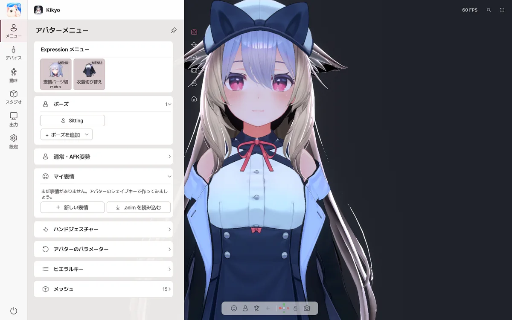

4. メイン画面
v2.0.0 のウィンドウは常に編集用のシーンビューです。スタジオカメラを配信中でも、自分のウィンドウではアバターやライト、小物の調整ができます。

左側メニューの使い分け
| メニュー | 変更の影響を受ける部分 |
|---|---|
| メニュー | 選択アバターの Expression メニュー、衣装トグル、表情・ジェスチャー。5章 |
| デバイス | Web カメラ・マイク・iPhone・トラッカーなどの入力元。6章 |
| 動作 | 顔・目・頭・手・全身の動き、AFK とリップシンク。7章 |
| スタジオ | シーン、アバター配置、部屋、照明、カメラ、エフェクト。8章 |
| 出力 | Spout2・NDI・仮想カメラ・画面共有・リモートセッション。9章 |
| 設定 | FPS・ウィンドウ・ショートカット・言語・ファイル・更新。10章 |
パネルを開いて右上のピンをオンにすると、別の場所を押しても閉じません。パネル上でマウスホイールを使うと設定をスクロールし、外側ではシーンビューをズームします。意図せずズームしたらカーソルの位置を確認してください。
編集画面と配信画面を区別する
- 下側ツールバーやマウスで動かすのは自分のシーンビューです。
- スタジオカメラを配信中なら OBS/NDI にはそのカメラの画面が送られます。編集画面で裏側を見ても視聴者には自動的に映りません。
- シーンビュー自体を送出している場合は自分が動かした視点も視聴者に映ります。スタジオカメラと出力で送出対象を確認してください。
下のカメラとクイックアクション
- 顔・上半身・全身は選択したアバターとの距離を変え、顔は表情確認、上半身はチャット配信、全身はダンス確認に適しています。
- + ビューを保存は現在の位置・回転・画角をプリセットとして記録し、あとで戻すためのものです。
- カメラロックはマウスによる編集中の視点移動を防ぎます。アバターのトラッキングを止めるものではありません。
- 固定・自由・軌道は編集用視点の操作方法です。軌道はキャラクターを中心に回り、自由は視点の向きを自由に動かします。スタジオカメラの追従方式とは別です。
- **FOV（画角）**を下げると人物が大きく背景が狭くなり、上げると広く映ります。マウス速度を上げると同じ動作でも視点が素早く移動します。
- ツールバーの不透明度は待機時の見た目を変更します（初期状態で約 60%）。ホバーすると濃く表示し、背景を右クリックすると移動・透明度の設定ができます。
- クイックアクションは表情・ポーズ・スイッチのショートカットです。作用する内容はアバターのメニューによります。
表示・リセット・終了
F1は Avatar Live が前面にあるときアプリの UI を非表示／再表示にします。これは配信画面の透過背景設定とは別です。リセットは髪や尻尾の物理状態が乱れた場合の復帰に使います。ウィンドウの X は設定によって終了またはトレイへの最小化になります。配信中にトレイへ入っても出力が続く場合があるため、完全停止は終了を選んでください。設定の検索から AFK、視線、ショートカット、Spout2 などを直接探せます。